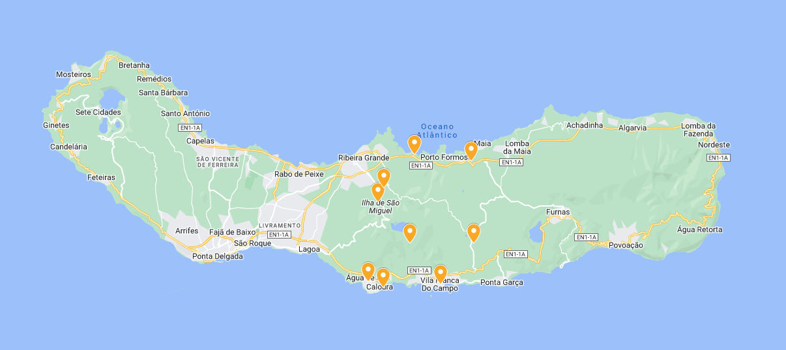

ZONA OESTE
Miradouro Vista do Rei e Lagoa das Sete Cidades
Há vários miradouros a partir dos quais se pode contemplar a bela lagoa das Sete Cidades, mas o Miradouro Vista do Rei é o mais famoso. Embora a Lagoa das Sete Cidades parecer, aparentemente, duas lagoas – uma verde e outra azul – é, na realidade uma só lagoa cujas águas verdes e azuis não se misturam.

Lagoa do Canário
A Lagoa do Canário tem a particularidade de que a sua silhueta desenhada pelas árvores, se assemelhe à vista de um pássaro.

Miradouro da Grota do Inferno
A lagoa está localizada logo no início do trilho que irá percorrer para chegar ao conhecido Miradouro da Grota do Inferno (há uma caminhada de 15 minutos da Lagoa do Canário até ao famoso miradouro), no Parque Florestal da Mata do Canário. Antes de chegar ao miradouro compreenderá que esta é uma vista especial devido à multidão de pessoas que provavelmente lá estarão.

Desvio para o miradouro do Pico do Paúl
Depois de caminhar cerca de 500 metros chega-se ao Miradouro do Pico do Paúl, onde se pode ver uma grande parte da ilha, as costas norte e sul.

Aqueduto e o Muro das 9 Janelas
No final do trilho pela Serra da Devassa visitar o Aqueduto e o “Muro das 9 Janelas“: o maior e mais emblemático vestígio dos aquedutos da ilha.

Miradouro Cerrado das Freiras e Miradouro Lagoa de Santiago
O primeiro é Miradouro do Cerrado das Freiras que nos permite apreciar a magnitude da Lagoa das Sete Cidades de outro lado (para algumas pessoas, a vista de aqui é ainda mais bonita do que a Vista do Rei).A segunda paragem é no Miradouro Lagoa de Santiago e a sua explosão de verde. Ao ver esta lagoa do miradouro da Grota do Inferno sabíamos que seria algo especial e não nos defraudou.
A igreja de Sete Cidades
Se for à aldeia de Sete Cidades deve saber que tem uma igreja fotogénica e um restaurante recomendado por pessoal local (o que é sempre bom sinal): São Nicolau, com um buffet de pratos regionais.

Piscina térmica no meio do mar
A piscina natural tem várias cordas para se agarrar (para evitar bater nas rochas devido às ondas do mar)
Miradouro da Ponta do Escalvado
Na praia dos Mosteiros existe um bar de praia (Snack Bar “O Tubarão“, com cerveja local, barata)

Piscinas naturais dos Mosteiros
Na maré baixa, é possível ver claramente os labirintos de lava que solidificaram no mar
ZONA CENTRO
Lagoa do Fogo
A Lagoa do Fogo é uma das maiores lagoas de São Miguel e a mais bela de todo o arquipélago. Foi escolhida como uma das Sete Maravilhas de Portugal.
Caldeira Velha
Passeie por um jardim rico em plantas endémicas, respire fundo e acabe sob uma cascata de água quente, piscinas e fumarolas: bem-vindo à Caldeira Velha
Salto do Cabrito (Cascata do Cabrito)
A cascata do Salto do Cabrito é obrigatória. Recomenda-se estacionar no topo e descer o trecho curto mas íngreme.
Lagoa do Congro
A Lagoa do Congro é uma das lagoas mais especiais da ilha por uma razão muito simples: só é acessível através de um caminho de cerca de 10-15 minutos de descida (e depois de subida) e o facto de não poder vê-la assim que estaciona o carro torna-a muito menos povoada do que as outras.
Lagoa do Congro - O trilho é fácil e vale a pena.
À chegada, a recompensa não é apenas visual mas também audível. A cratera de 3900 anos rodeada por uma floresta verde tão densa, acompanhada pela banda sonora de sapos e aves, faz desaparecer todos os problemas que possa ter tido antes de descer, pelo que pode simplesmente concentrar-se e desfrutar da paz deste lugar.
Miradouro de Santa Iria
O Miradouro de Santa Iria, perto do Porto Formoso, oferece vistas incríveis da costa norte de São Miguel, onde o verde contrasta com o azul do mar do Atlântico. Tem alguns lugares de estacionamento gratuitos para que se possa chegar perfeitamente de carro, no caminho para a zona nordeste da ilha.
Chá Gorreana e Plantações de Chá do Porto Formoso
A fábrica de chá Gorreana é a mais antiga da Europa (a funcionar desde 1883)
Chá Gorreana e Plantações de Chá do Porto Formoso
A visita é gratuita, todos os dias das 08:00h às 20:00h (nos fins de semana a partir das 09:00h). Se visitar a ilha entre Abril e Setembro terá sorte: é a época da colheita do chá e significa mais atividade na fábrica.
Caloura
Para algumas pessoas é a mais bela piscina natural da ilha e isso já aguçou a nossa curiosidade, embora tenha sido realmente a comida que nos trouxe até aqui. Várias pessoas recomendaram-nos o Bar Caloura e o seu terraço sobre o mar para comer peixe bom e fresco.
Miradouro Monte Santo
Na zona, não pode faltar a Praia Baixa D’Areia (também conhecida como Praia da Caloura), uma pequena enseada com águas transparentes, e os miradouros do Pisao e Monte Santo.
Vila Franca do Campo e Ilhéu de Vila Franca
No meio da costa sul da ilha situa-se o mais antigo município de São Miguel e, capital da ilha até 1522: Vila Franca do Campo. Esta bonita cidade de ruas estreitas que conduzem ao mar foi inicialmente associada à cultura do açúcar, mais tarde com laranjas e mais recentemente com ananases. Vila Franca do Campo é uma terra com os braços abertos para o mar e de quase qualquer ponto da mesma, podemos ver o ilhéu que fica a cerca de 500 metros da costa, Ilhéu de Vila Franca ou, como também é conhecido, o “anel da princesa”, devido à sua forma.
ZONA ESTE

Lagoa das Furnas e Capela de Nossa Senhora das Vitorias
O “Vale das Furnas” está localizado na cratera do vulcão das Furnas, um dos três vulcões ainda activos e o maior da ilha verde

Lagoa das Furnas
E se as lagoas vulcânicas são uma das maiores atracções de São Miguel, o Lagoa das Furnas é um exemplo claro do seu magnetismo.

Capela de Nossa Senhora das Vitórias
Catedral neo-gótica foi construída como prova de fé por José do Canto, natural de São Miguel, em 1886

Aldeia das Furnas
Junto à Lagoa das Furnas há alguns buracos no chão que são autênticas cozinhas naturais onde o famoso prato é preparado: o “Cozido das Furnas“!

Casa Invertida
Casa invertida em Furnas
Parque Terra Nostra - Piscina com águas termais
A temperatura da água está entre 35º e 40º

Parque Terra Nostra - Um dos jacuzzis naturais do Terra Nostra
Um dos jacuzzis naturais do Terra Nostra

Parque Terra Nostra - Jardim botânico com flora biodiversa
O Parque Terra Nostra tem um enorme jardim botânico com uma flora biodiversa (de facto, tem a maior colecção de camélias do mundo, com mais de 600 espécies) através do qual se pode caminhar por quatro rotas diferentes.

Poça Dona Beija
Poça Dona Beija tem três piscinas de água quente a 39º e um rio que as atravessa a 28º
Miradouro do Castelo Branco
Pequeno castelo que dá o seu nome ao miradouro, temos a sensação de que parece estar zangado. As vistas 360º que temos do telhado do Miradouro do Castelo Branco, de um lado, o vale das Furnas e a lagoa e, do outro, Vila Franca do Campo e o seu ilhêu fotogénico.
Miradouro do Salto do Cavalo
Situado a uma altitude de mais de 700 m acima do nível do mar, no extremo norte da caldeira das Furnas, oferecendo uma vista sobre o vale da Povoação e as sete “lombas”, o vale das Furnas com a caldeira e a sua lagoa, estendendo a vista em direcção ao mar.
Poço Azul e Salto da Farinha
Na paróquia de “Achadinha” existe uma piscina azul no meio de muito verde. Chama-se Poço Azul e o caminho curto mas (bastante) íngreme e bonito para lá chegar vale a pena.
Ribeira dos Caldeirões
O parque natural da Ribeira dos Caldeirões tem uma grande variedade de flora macaronésica (região que compreende os Açores, Madeira e Ilhas Selvagens, Canárias e Cabo Verde) e Laurisilva. Para além da impressionante cascata Aqui pode encontrar moinhos antigos, dois deles ainda em funcionamento.
Miradouro Ponta do Arnel, Farol e Porto de Arnel
O farol da Ponta do Arnel é o farol mais antigo dos Açores, instalado em 1876. Ainda hoje funciona (embora eletrificado).
Miradouro da Ponta do Sossego
Sossego, em português, significa tranquilidade e é isso que encontrará neste miradouro. Literalmente. O Miradouro da Ponta do Sossego tem um belo jardim cheio de flores, árvores e pássaros, muito colorido. Vê-se perfeitamente que se encontra na rota turística, pois tem um quiosque na própria entrada. Do miradouro temos uma bela vista sobre as falésias, cheias de flores, e tem também zonas de piquenique.
Salto do Prego
Um dos mais belos trilhos da ilha é o Salto do Prego e Sanguinho. É um trilho circular de 4,5 km que começa no Faial da Terra, passa junto à impressionante cascata Salto do Prego para arrefecer (a água está gelada) – pode fazer um desvio para outra cascata chamada Salto do Cagarrão – e no final do trilho passa por Sanguinho uma aldeia rural lindamente restaurada onde é possível passar a noite.